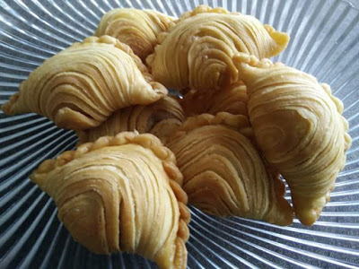
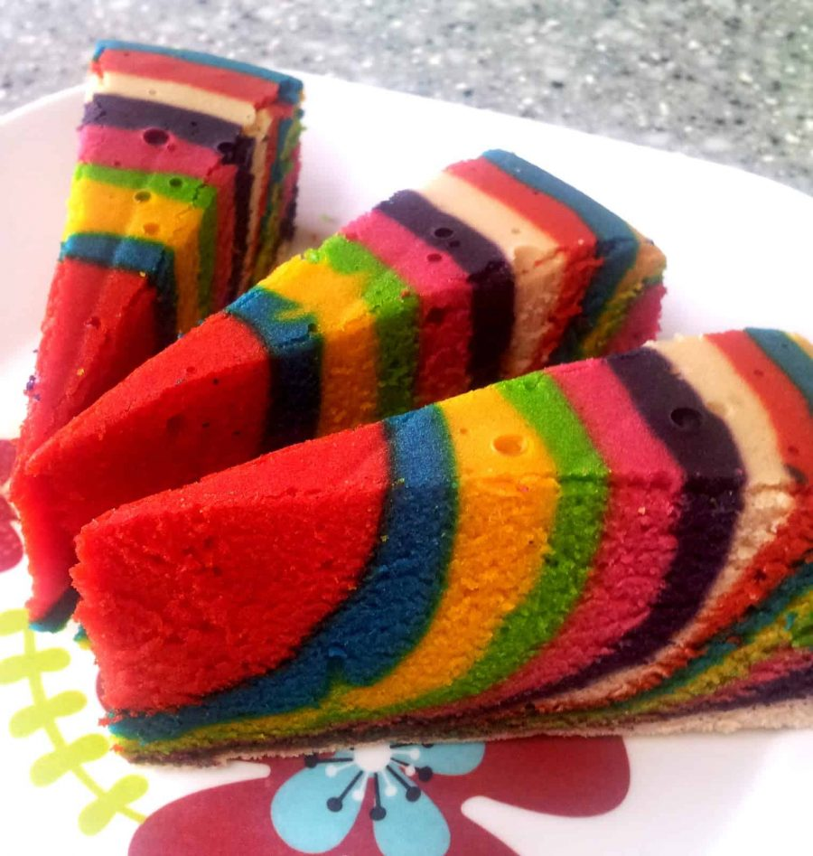
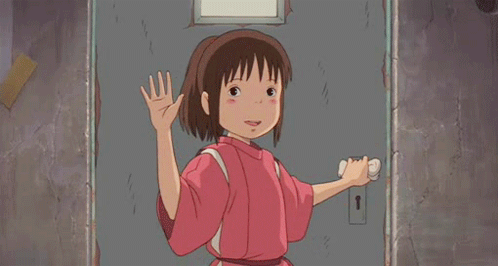

MY ACTIVITIES DURING MCO
Hye Assalamualaikum. I am Siti Hazirah. Since the Covid19 has been spread rapidly in our country, the MCO or Movement Control Order has been extended.
But as the days have gone by, life actually has settled down to a pleasant equilibrium. I am starting to enjoy my new life in these days.
I managed to spend more time with my family here.Suffice it to say, the clouds will eventually lift.
In the meantime, let's create sunshine and hapiness and find the silver lining.So, I want to share my new routines to you.
1. Online and Distance Learner
Since we are having MCO, so we cannot make any face to face class. The only way to carry on the studies is within the
online class. Yes, I admit it that I miss my friends and also my lecturers. But there is nothing that we can do right?
So, the classes are being proceed. Everyday I will have online classes. And I have to do the assignments and submit them via online.
2. Watching Movies and Dramas
SKdramas are pretty great and there's no denying our addiction to them. We can't lie to ourselves though. The appeal
of Kdramas is exponentially increased by the attractiveness of all the people in them. I love korean dramas because of their storylines
that are so creative and fresh. Their stories are so dramatic and unreal but beautiful. Other than that, the actors are act greatly.
In every dramas, they will shoot at nice places such as beaches, mountains, or even big cities.

Itaewon Class Drama
3. Cooking and Baking
Making biscuits and cakes or cooking lunch and dinner are very fun for me. Therefore, I already baked some cakes during this MCO. I baked
Kek Marble with my mom. I learned some new kuih also like Kuih Karipap Pusing. It has many steps to do. My mom was excited to do it and finally
we made it. We also learned some new recipes and tried them. During these MCO, I can improve my knowledges and skills in baking.
Furthermore, I can spend more time with my mother when baking cakes.

Kuih Karipap Pusing

Kek Marble
These all are some activities that I did during MCO. I feel want to explore more things during this MCO. Thank you for reading this entry.
BYE....
